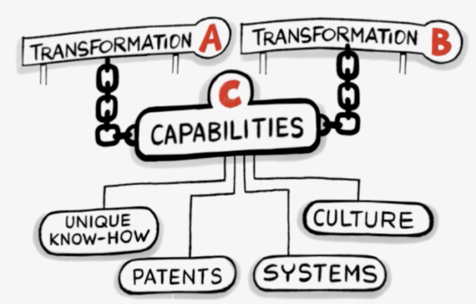
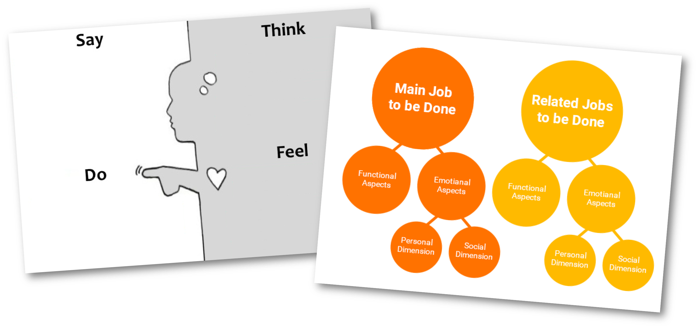
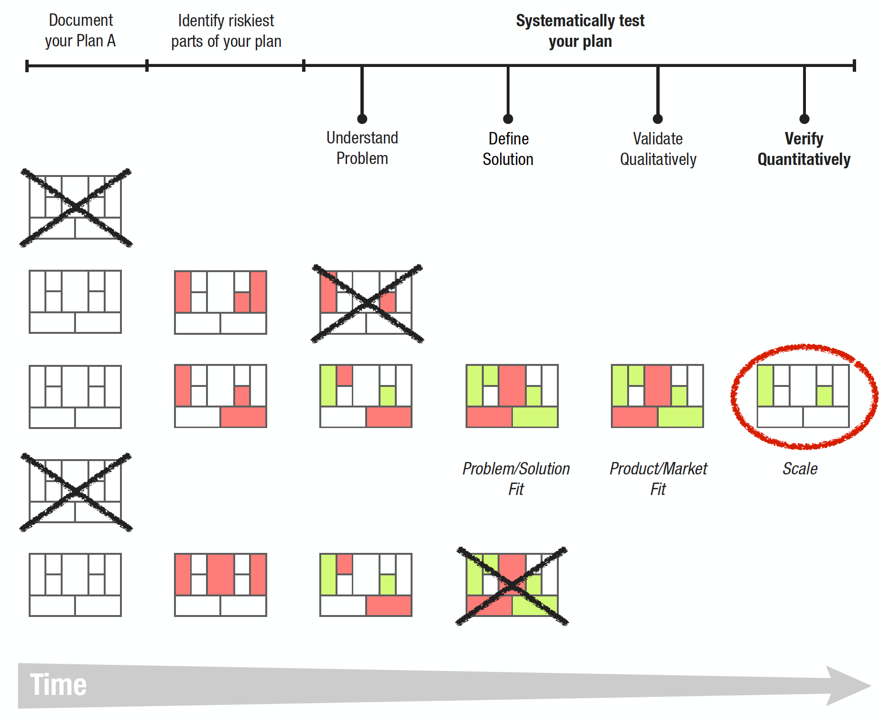
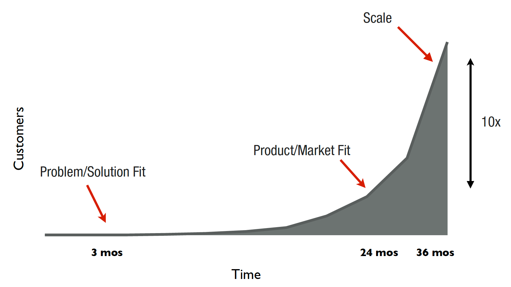

Dec 11 2017 > Originally posted on Medium
Business Model Canvas, Lean Canvas, Product Journey
Where to start and how to transition between various innovation methodologies depends on where a product sits along its product lifecycle.
Continuous innovation
Innovation should happen at every stage of the product lifecycle journey. In Dual Transformation a clear separation is made between repositioning today’s core business (transformation A) and creating the new (transformation B).

Graphic from innosight.com
Repositioning the core sort of bundles McKinsey’s Horizons 1 and 2, where it is mainly about defending and improving current products as well as extending value propositions, entering adjacent markets and/or targeting new customers. Creating the new can somewhat be mapped to McKinsey’s Horizon 3, which is what most people typically associate innovation with. Both differ in a number of ways. The creation of a new product often starts with a vision of making customers’ lives easier in one way or another. At the early stages there is no multi disciplinary team, no customer, no solution or no business model, just a passionate entrepreneur with a bunch of assumptions yet to be validated. When repositioning the core business, there is an established team with a good understanding of the business model and access to current customers. Existing products have revenue targets to meet and there is a risk of (subconsciously) sabotaging new, potentially competing ideas, so I agree that it is sensible to separate both.
Explore
All products should start with empathy, exploring the problem space to better understand who the customers are, what they say, do, think and feel or what the functional, emotional and social facets for which they will hire the product are (check-out Competing Against Luck). Empathy is the most important aspect to nail and not just when creating a new product, even existing products must maintain customer empathy to be able to react to changes in the market and/or customers’ lives.

I think the empathy map image is dSchool’s and the Jobs-to-be-done image is from Zbigniew Gecis
Validate
All insights are assumptions until they are validated and most popular innovation methodologies now strongly advocate to test using small experiments. Most teams now luckily also document their product vision in some variation of the Business Model Canvas instead of the traditional long and boring business plan. Ash Maurya made a great visual showing how a product can go from a plan A to a plan that works by gradually validating aspects of the business model (I’d recommend his Running Lean and Scaling Lean books).From Ash Maurya’s Running Lean

Image from Ash Maurya
There are a number of ways to prioritise assumptions and the simple question of “which part of the business model, if not true, would make our entire product vision collapse?” is a really good guide. Experiments should always have clear purpose of validating an assumption with AAA metrics (actionable, accessible and auditable) and never start to “just see what happens” because innovator bias will always turn whatever happened into an excuse or even a success.
Scale
Early on in the innovation funnel the main focus is on learning from customers, co-create a product customers really want. Later the focus shifts to testing and tuning the customer growth engine, to see if the target can be reached by measuring things like Dave McClure’s “Pirate Metrics”, i.e. customer acquisition, activation, retention, referral, and revenue. Scaling applies to new products, but changes to existing products should also be tested on a minor subset of the customer base first.

From Ash Maurya’s Scaling Lean
The Product Journey?
Let’s start by acknowledging that customers don’t care which methodologies are used to create products that make their lives easier, so just use whatever tools, techniques or templates that work for you. I thought I’d use this post to share (and get some feedback) on an adaptation of the Lean Canvas and Business Model Canvas I’ve been tinkering with.
Why another canvas?
Well, I believe we should always question whether something really adds value. Alex Osterwalder’s Business Model Canvas has been a great invention because it allows everyone to describe and share their product vision on a single page. I have never been a big fan of the Value Proposition Canvas mainly because it relies on being a separate canvas. Ash Maurya’s Lean Canvas is (for me) a step in the right direction as it is a lot more customer-centric with some really valuable adaptations.
I have often noticed people struggling to either complete (or just add meaningless) content to some aspects of the canvas. This raised a red flag and here I am proposing to replace these aspects with things that can add more value to the product one-pager.
The “business model” and not the “solution” is the product, and continuous innovation means a product is on a continuous journey, so I decided to call this new business model adaptation the “Product Journey”.

Our adaptation of the Lean Canvas which in turn was an based on Business Model Canvas
Let’s go through the canvas:
- Problems: Describe the top 3 problems but also think in terms of functional, emotional and social jobs-to-be-done terms. The original use of “Key Partners” was just not customer-centric enough for me.
- Existing Alternatives: This was added in the Lean Canvas and I find it to be extremely valuable. It really makes you think what your solution is really competing with.
- Solutions: An exact copy of the Lean Canvas to describe the solutions for each jobs-to-be-done rather than the original “Key Activities” which I found too internally focussed.
- Key Metrics: Again, just taking over the adaptation the Lean Canvas. How is measured how well the solutions addressing the jobs?
- Pitch: A change from (Unique) Value Proposition to a stronger focus on pitching, following tips from Venture Hacks’ Pitching Hacks to document the High Level and Elevator Pitch. Describe your product‘s vision into a single phrase or sentence and describe traction and social proof. Show why the team is best placed to tackle this product and share past successes and expertise.
- Unfair Advantage: Taken over from the Lean Canvas, describe the advantage that cannot easily be copied or bought. If there is no obvious unfair advantage it can be a good reminder to be aware of it.
- Customer Factory: A more specific description of “Channels” by describing the strategies to find and attract customers, encourage repeat usage and promote referrals. i.e. Describe the Acquisition, Activation, Retention and Referral pirate metrics parts.
- Customers: Focus on who the users, customers, influencers and any other stakeholder are … and in which situation will these customers will hire your product. Dropping the “Segments” part to put a stronger emphasis on the “trigger” when the customer changes their habit and overcomes any anxiety to change their behaviour and become a customer.
- Early Adopters: Again as on the Lean Canvas. Before having tested the Customer Factory we need to find customers to talk to and who are willing to test our early prototypes. Describe the characteristics of these early adopters who are willing to co-create and pay for the early product versions.
- Goal: The cost box often added none or very minimal value. The product’s goal is valuable and will keep the team’s eye on the ball. What is the minimum success criteria (i.e. yearly revenue) that would deem this product to be successful? Calculate and show what this means in terms of the number of customers the product should have at any stage.
- Value Capture: Similar to the cost, the revenue box rarely added value, however details about our pricing and expected customer lifetime value is valuable and key to measure if the product is on track towards the goal. So, what is the pricing model? How much value can be captured per customer per year? Not having a cost box also reduces the urge to apply a cost-based pricing model rather than value-based pricing.
I found that sticking with the same number of boxes as the Business Model Canvas (just like the Lean Canvas did) makes perfect sense because it is so widespread now and I found myself just sticking post-its on top of the title to re-purpose the boxes. I also wanted to clearly credit Alex Osterwalder and Ash Maurya.
Again, this is not a better Business Model Canvas or a better Lean Canvas, it’s just a different adaption that makes sense to me to describe a product on a single page. Thoughts?